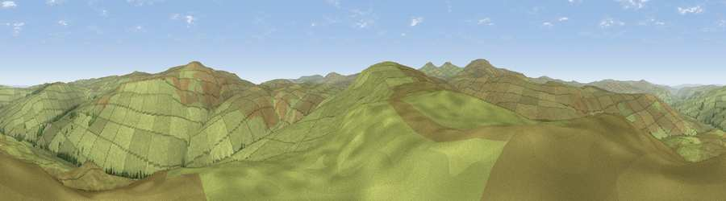

Noonstones Hill
#7920 in England · top 21% of its area beats it · near GarrigillThe view, rendered

A 360° render of this exact spot computed from the terrain model, tree cover and land cover — summer colours, afternoon light, calibrated against photographs of famous viewpoints. Real trees, hedges and buildings will differ in detail.
The panorama
Grey silhouette: terrain skyline in each direction (720 bearings, Earth curvature and refraction included). Dashed green: skyline with trees (+15 m) and buildings (+8 m) as obstacles. Blue strip: how far the ground is visible on each bearing.
Where the view opens
Wedge length = distance to the farthest visible ground on that bearing (vegetation-aware). Rings at 10, 25 and 50 km.
What fills the view
99% grassland ·
Angular shares of the visible panorama (visual magnitude), not map area. Landscape diversity 0.02 (0–1 Shannon).
Key numbers
More beautiful places nearby
The staircase of upgrades: each row has a higher view potential than everything closer. Driving times are estimates from straight-line distance, calibrated against real road routing — check an actual route before setting out.
| Place | Direction | Drive | Score |
|---|---|---|---|
| Burnhope Seat | E · 3 km | ~8 min | 67.3 |
| Dead Stones | ENE · 5 km | ~11 min | 72.8 |
| Little Dun Fell | SW · 7 km | ~14 min | 78.4 |
| Cross Fell | WSW · 7 km | ~15 min | 78.7 |
| Viewpoint near Cumrew | NW · 23 km | ~39 min | 78.8 |
| Barrock Fell | WNW · 30 km | ~46 min | 81.1 |
| Viewpoint near Watermillock | WSW · 33 km | ~51 min | 82.6 |
| Viewpoint near Watermillock | WSW · 34 km | ~52 min | 83.5 |
54.73656, -2.39251 · source: osm peak · position refined by local search. Computed location — check access rights before visiting.